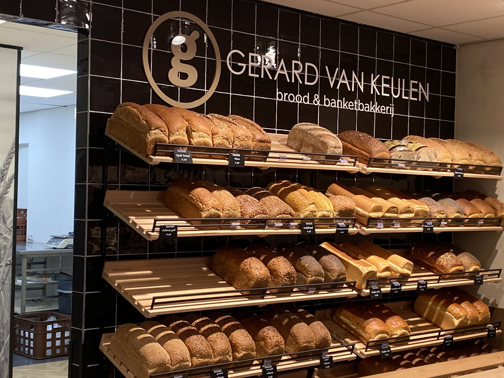
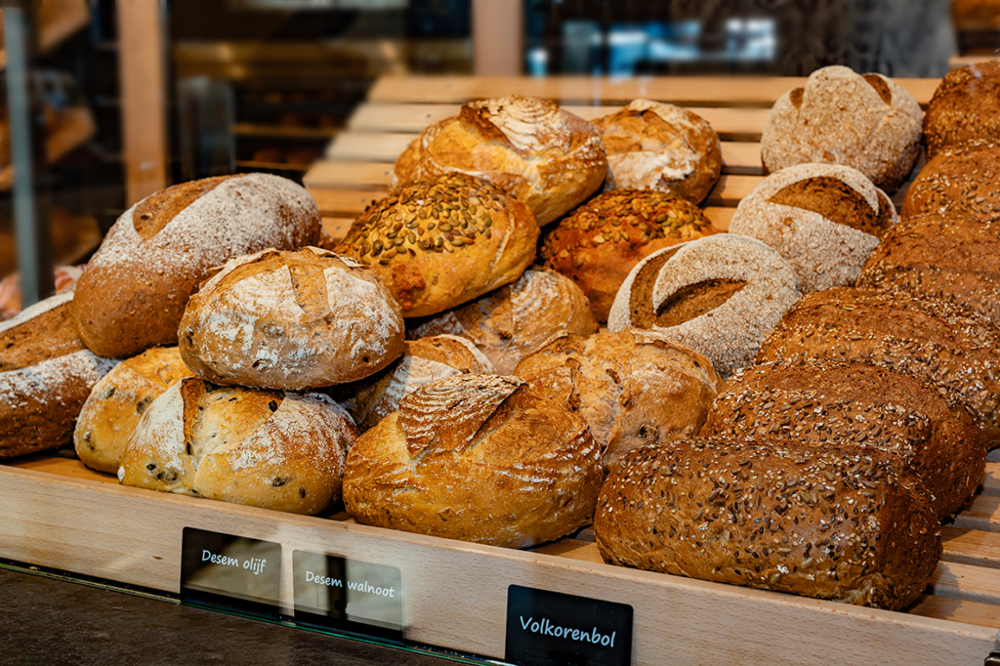
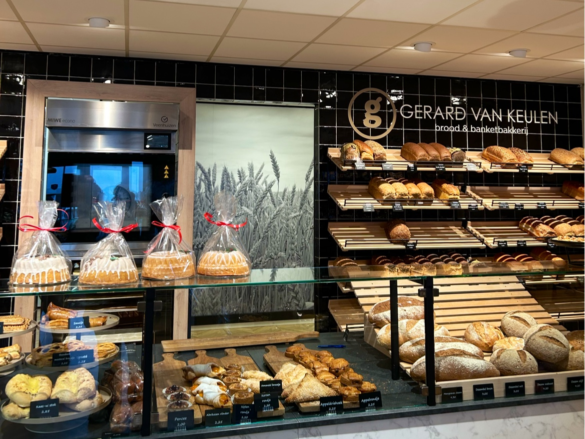
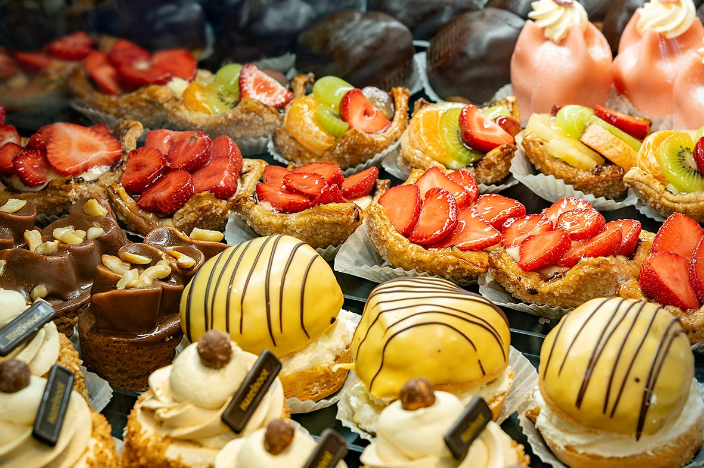
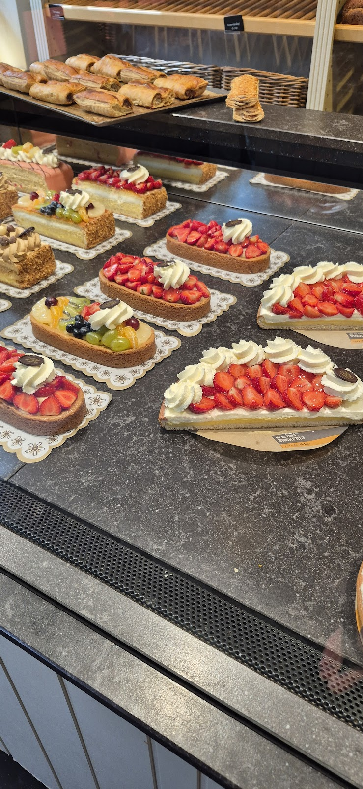
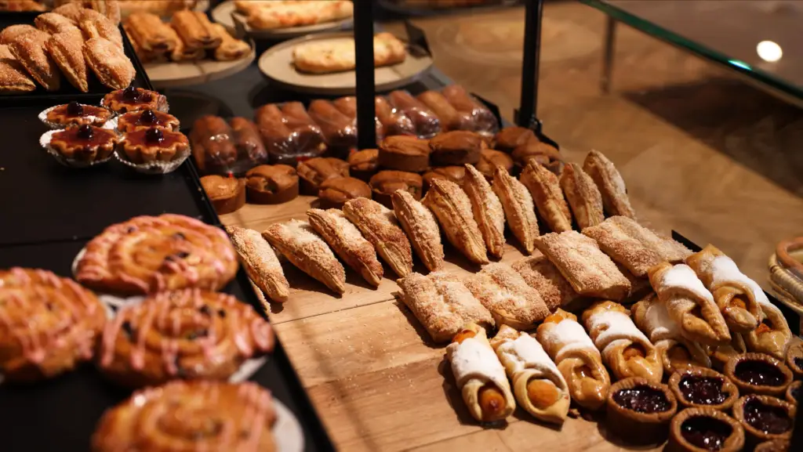
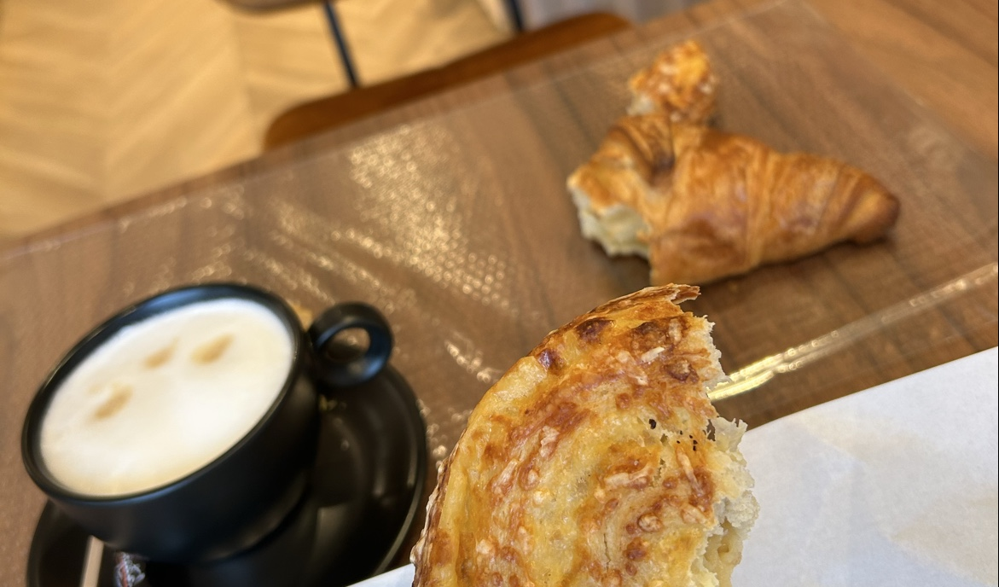
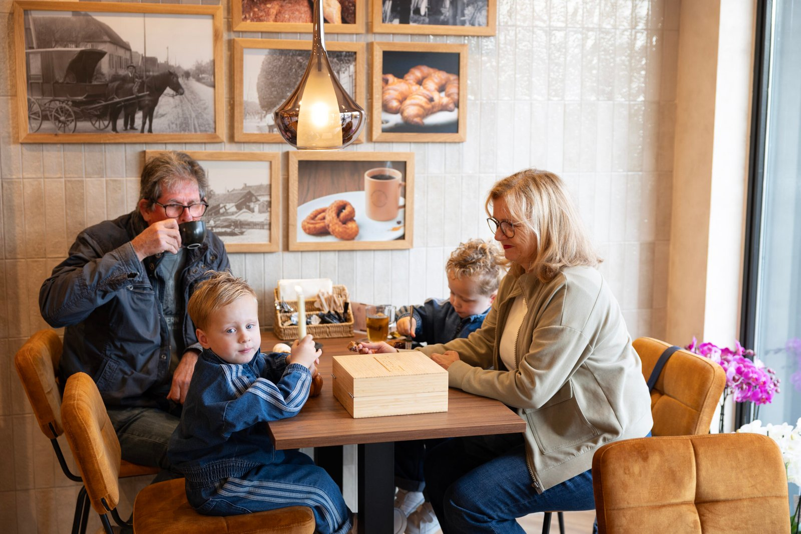
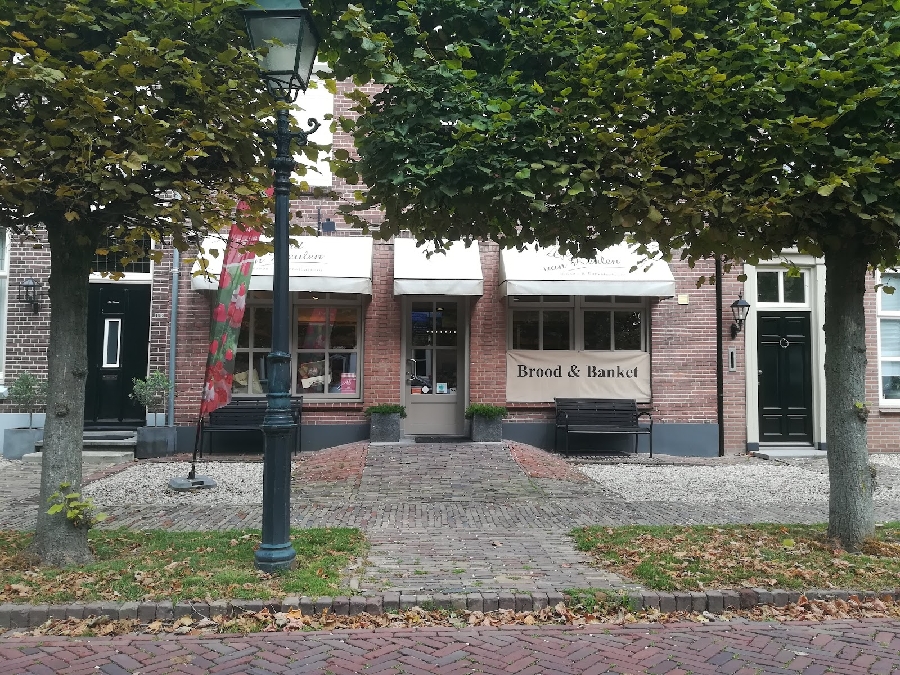

Brood & banketbakkerij aan het Dorpsplein in Beesd
Een échte bakker, midden in Beesd.
Vers brood, banket en hartige snacks, zes dagen per week. Loop gewoon binnen, of bel vooraf als u iets wilt laten klaarzetten.
4.5 uit 114 Google-reviews



Elke ochtend vol schappen.
Van een stevig Hollands grof tot desem met olijf of walnoot. Vanaf acht uur 's ochtends liggen de planken vol. Twijfelt u? Vraag gerust wat we vandaag hebben.
- Desem olijf
- Desem walnoot
- Volkorenbol
- Speltbrood
- Hollands grof
- Maisbrood
- Krentenbrood met spijs
Voor bij de koffie, of voor een feestje.
Vruchtenvlaai, schnitt met aardbeien, gebakjes met slagroom en natuurlijk tompouces. Moet het voor een verjaardag of bezoek? Bel even, dan zetten we het voor u klaar.



- Vruchtenvlaai
- Vruchtenschnitt
- Gebakjes
- Tompouces
- Appelflappen
- Hartige snacks
Even zitten mag ook.
Een kop koffie met een croissant of een kaasbroodje, binnen aan tafel of op het terrasje voor de winkel. Met uitzicht op het Dorpsplein en de leilindes.


4.5
uit 114 reviews op Google
Wat klanten over ons zeggen.
"Heerlijke broodjes, prettige bediening, ruime keus, service plus een miniterrasje voor de winkel. Voor als je een échte bakker zoekt. Mooie locatie trouwens ook aan de hoofdstraat met al die fraaie leilindes!"
"Heerlijk brood, krentenbrood met spijs. Het kost maar dan heb je ook wat. 1 van de beste bakkers die we hebben bezocht."
"Fijne winkel! Heerlijk brood en andere baksels en vriendelijke bediening."
"prima bakker , genoeg keuze prima prijzen, altijd beter dan een supermarkt"

Kom langs aan het Dorpsplein.
Dorpsplein 5C4153 AG Beesd
Route plannen
| Maandag | 08:00 tot 18:00 |
|---|---|
| Dinsdag | 08:00 tot 18:00 |
| Woensdag | 08:00 tot 18:00 |
| Donderdag | 08:00 tot 18:00 |
| Vrijdag | 08:00 tot 18:00 |
| Zaterdag | 08:00 tot 16:00 |
| Zondag | Gesloten |